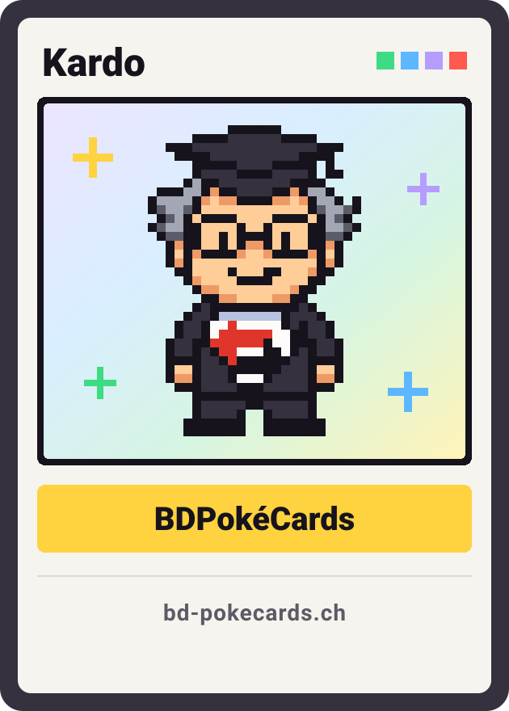

Erlebnisse
Jedes Projekt der Werkstatt hat einen Moment, in dem sich etwas bewegt. Wir haben pro Projekt einen davon übernommen, ausgehend von seinem eigenen Code, damit man ihn hier ansehen und ausprobieren kann, ohne die App zu installieren oder die Website zu öffnen.
-
Yamanote 3D
Der Bildschirm über den Türen der E235-Züge, den das Spiel originalgetreu zeichnet: nächste Stationen, Plan der Ringlinie, Ausgänge und Hinweise, erst auf Japanisch, dann auf Englisch. Der Zug wird hier simuliert, dreimal schneller als in Wirklichkeit und nach Tokioter Zeit.
-
Disque Bleu
Die Scheibe der App, Strich für Strich nachgezeichnet. Drehen Sie sie mit dem Finger oder der Maus: Angestossen behält sie ihren Schwung. Beim Loslassen zeigt sie die einzustellende Zeit an, immer die nächste halbe Stunde, so wie die App sie für die Schweiz berechnet. Der orange Bereich ist die erlaubte Parkzeit.
-

BDPokéCards
Auf der Seite einer Karte neigt sie sich zum Zeiger und fängt das Licht, mit einem Regenbogenschimmer. Diese hier zeigt Kardo, das Maskottchen des Onlineshops: Die Pokémon-Karten gehören ihren Herausgebern.
-
- Die fünf Galaxien
- Der Fall von Gamma
- Der Erste Zetianische Krieg
- Jahr 0: die Gründung der Union
- Die Stellare Wiedergeburt
- Die unvollständigen Archive
- Der veränderte Ritus
Stellar Rebirth
Die sieben Bilder aus dem Prolog des Romans, als Strichzeichnung wie in seiner Lese-App. Jedes zeichnet sich selbst und macht dann dem nächsten Platz; tippen Sie auf die Szene, um umzublättern.
-
Vergasta Photo
Die Kugelansicht der Sammlungen des Portfolios, hier jene aus Japan. Drehen Sie sie durch Ziehen, und tippen Sie auf ein Foto, um es mit seinen Aufnahmedaten in die Mitte zu holen.
-
Axolot
Während etwas lädt, zeigt Axolot eine beschädigte Videodekodierung, ausgeschnitten in der Silhouette seines Axolotls. Tippen Sie auf das Symbol, um eine neue zu starten.
-

Ta personnalité :) ton équilibre
Custom To Lylia
Auf der Startseite des Onlineshops folgt das Logo dem Mauszeiger mit dem Blick, wo immer er sich auf der Seite befindet. Auf einem Touchscreen atmet es.
-
- 0Überfällig
- 1Diese Woche
- 2Bevorstehend
- 3Verlauf
-
Als bezahltStromRechnungCHF 142.35T-2
-
Als beendetHausratversicherungVertragT-26
-
Erinnerungen ausGeschirrspülerGarantieT-58
Mes Échéances
In der App wechselt eine Frist die Farbe, je näher sie rückt: grün bei mehr als einem Monat, danach orange, rot ab drei Tagen. Lassen Sie die Tage mit dem Regler vergehen, und ziehen Sie eine Karte nach links für ihre Schnellaktion.
Ein Moment für Ihr Projekt
Wenn Ihre Website oder Ihre App einen Ort braucht, an dem sich etwas bewegt, schreiben Sie uns. Wir antworten in der Regel innerhalb von zwei Arbeitstagen.